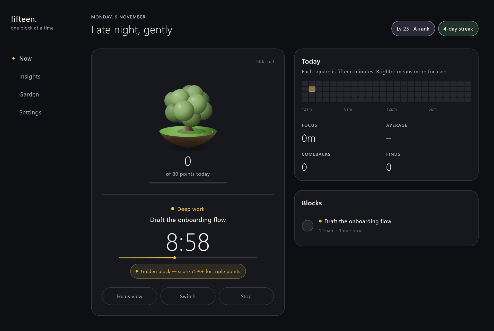
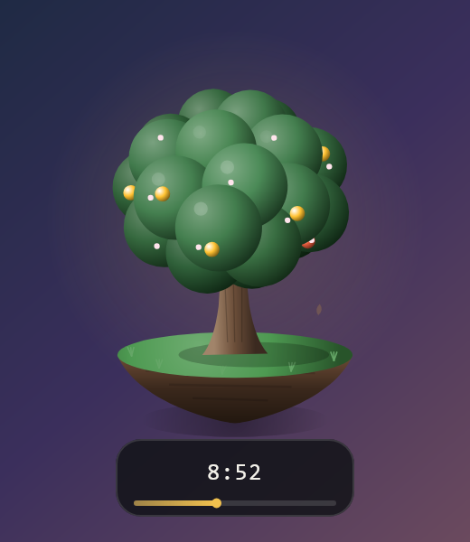
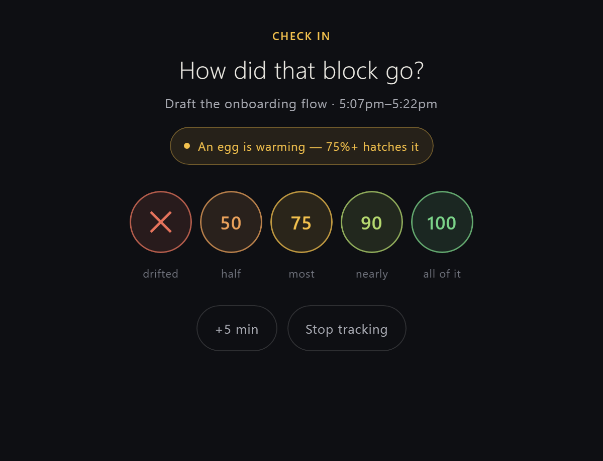
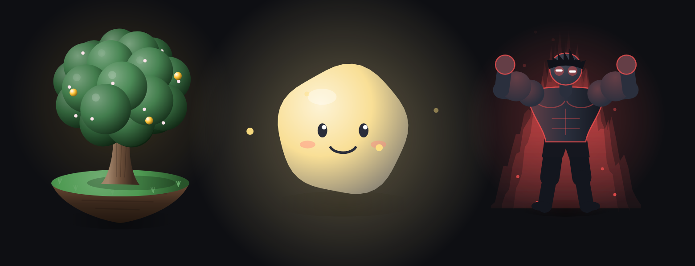
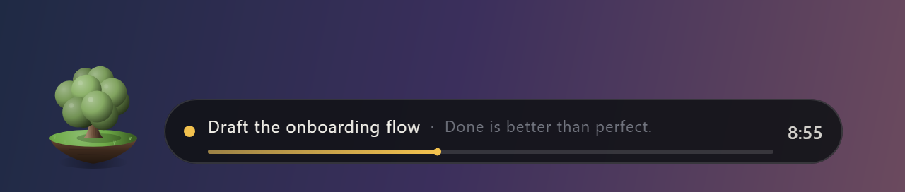
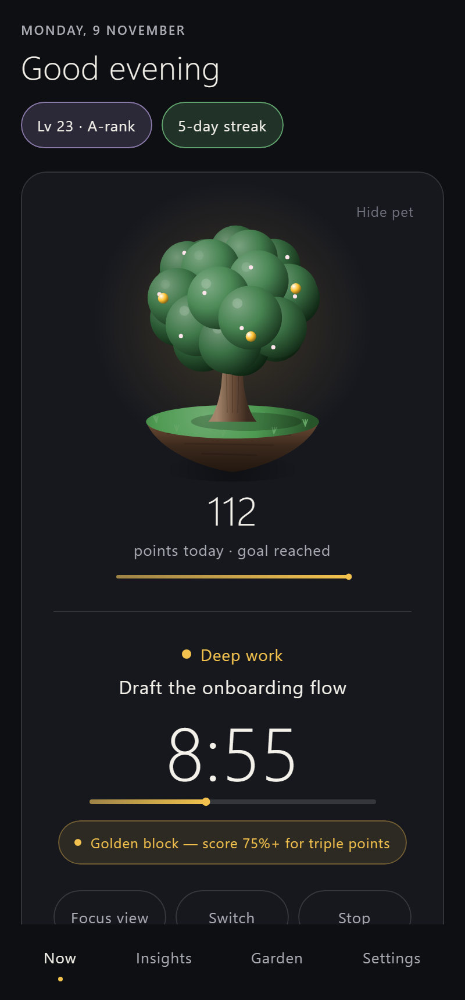
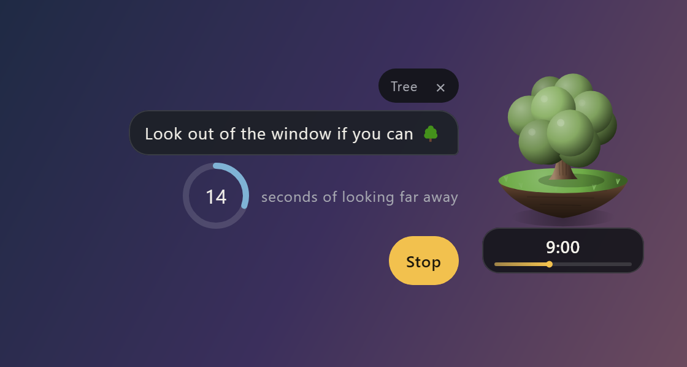
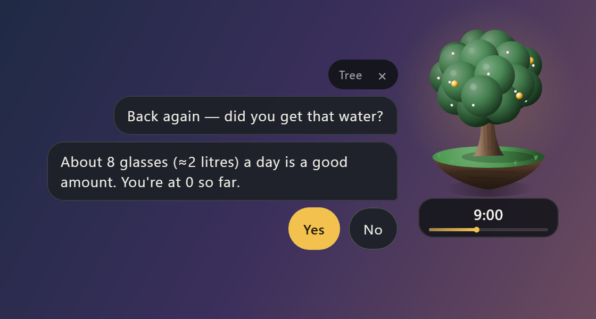
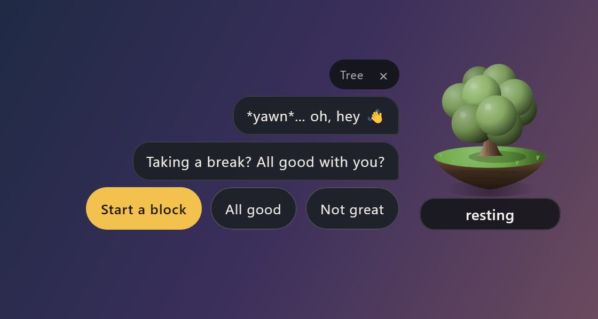
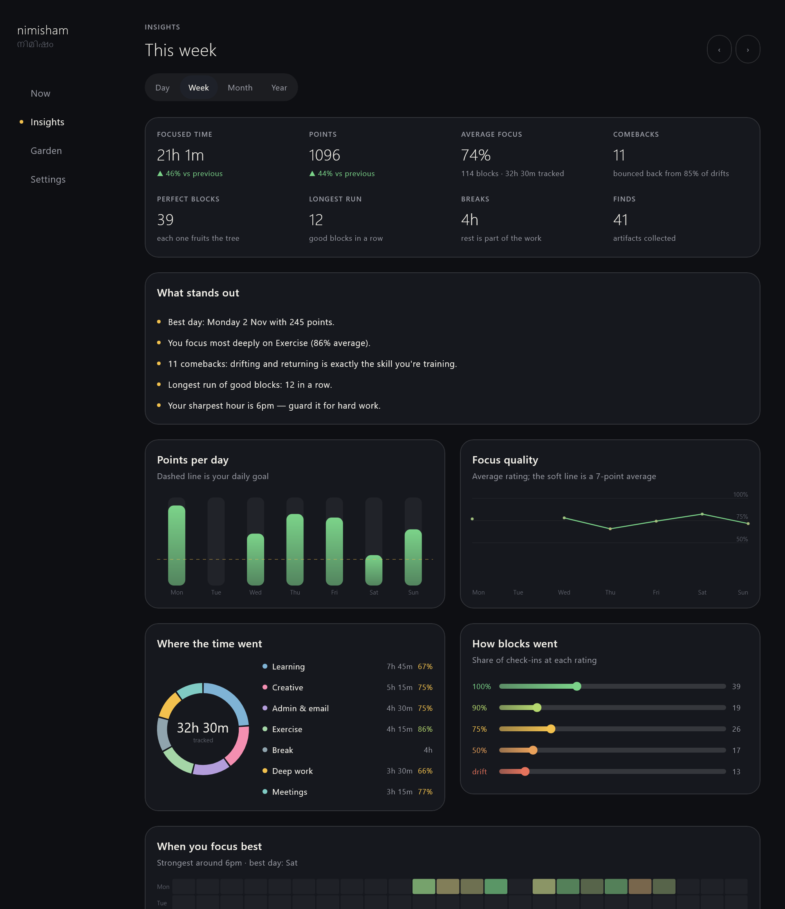

Free for Windows and Android
Focus fifteen
minutes at a time.
A gentle focus timer with a companion that floats on your screen and grows as you work. No guilt, no lost points, just the next fifteen minutes.
Version 1.1 · no account, no ads · release notes


Who it's for
Made for wandering minds
You don't need willpower for a whole day. Just for the next fifteen minutes.
People with ADHD
Small blocks, kind check-ins and comebacks that count double. Drifting is part of the training, not a failure.
Freelancers and students
See where your time really goes: focused hours, your best times of day, and how each kind of work feels.
Fans of cosy games
Points, levels, golden blocks, eggs and 28 artifacts to collect, with a little friend cheering you on.
How it works
One question every fifteen minutes
- Pick what you're doing. Deep work, Learning, Admin… plus an optional "one thing" for this block.
- Work. Your companion floats on screen with the time left. Nothing to babysit.
- Check in. How focused were you? Drifted, 50, 75, 90 or 100. Honest answers always earn something.
- Keep going. Collect your points, maybe find an artifact, and choose the next 15, 30 or 60 minutes.

Points that never punish
A rough block never costs you anything
Drifted? Still counts
You earn a point for noticing honestly, and your next good block counts double as a comeback.
Momentum
Good blocks back to back earn more. A drift only pauses it, it never resets.
Little surprises
Random golden blocks and warming eggs that hatch when you finish strong.
Artifacts to find
From a River Pebble to a Golden Jackfruit. Dry spells quietly raise the odds.
Breaks count too
Rest earns points, because rest is part of the work.
Only up
Levels and XP only ever grow. Every day starts with a fresh companion.
Your companion
A little friend that grows with your day
It floats on your screen, naps while you rest, and reacts when you click it: a hop, a full 3D spin, or hearts. Each one has its own sounds.

Tree 🌳
Grows through the day on a floating island, blossoms, and fruits on perfect blocks.
Clouda ☁️
A soft cloud spirit that glows brighter as your day fills up.
Hunter ⚡
Bulks up as you level, with an aura that changes colour from rank E to S.

On your computer
Always there, never in the way
- Drag it anywhere. Click to play, double-click for the wider bar.
- Right-click to hide it, stop the block or quit. A hidden pet comes back by itself when the block ends.
- A ring in the tray fills as the block runs.
- Starts with Windows and asks what's first.
On your phone
Your pet comes along
- Floats over your apps in a ring that fills as the block runs. Long-press for the menu.
- A live notification: rate your block right from it, or quit while resting.
- A check-in pops up when a block ends, even when the phone is asleep.
- A home-screen widget and a calm full-screen focus view.

Add-ons
Little helpers, from your pet
Optional chats that come right out of your floating companion. Turn them on in Settings, and pick anytime or only during blocks.

Eye breaks
The 20-20-20 rule, with a small 20-second timer.

Water
A reminder, then a friendly "did you drink?" later.

While you rest
Your sleeping pet wakes up and asks if you're okay.
Insights
The whole picture, without the judgement
Focused time, average focus, comebacks, your best hours and days, where your time went, and a garden that keeps every day you grew.

Download
Start your first fifteen
Free for personal use. Works offline on one device straight away.
Windows 10 and 11
Unzip anywhere, for example in %LOCALAPPDATA%\Programs\Fifteen, and run Fifteen.exe.
Android 8 and newer
Open the APK on your phone and allow installing. Allow display over other apps so your pet can float.
Download for AndroidWant the same timer on both? Connect your own free Supabase database in a few minutes. How to sync →
Questions
Good to know
Is Fifteen free?
Yes. It's free for personal use on Windows and Android, with no ads, no tracking and no account.
Is it good for ADHD?
It was made for it. You only commit to the next 15 minutes, a rough block never costs points, and drifting then coming back earns a double-points comeback.
How is it different from a Pomodoro timer?
Instead of a strict work and break cycle, Fifteen asks how each block went, rewards honesty, and shows where your time and focus actually went, with a companion floating on your screen.
Can I sync my phone and computer?
Yes, optionally, through your own free Supabase database. Stopping a block on one device stops it on the other within seconds.
Where is my data?
On your devices, and in your own Supabase project if you turn on sync. Nobody else sees it.
Support
Made by one person, with care
If Fifteen helps you focus, say hi and support the project.